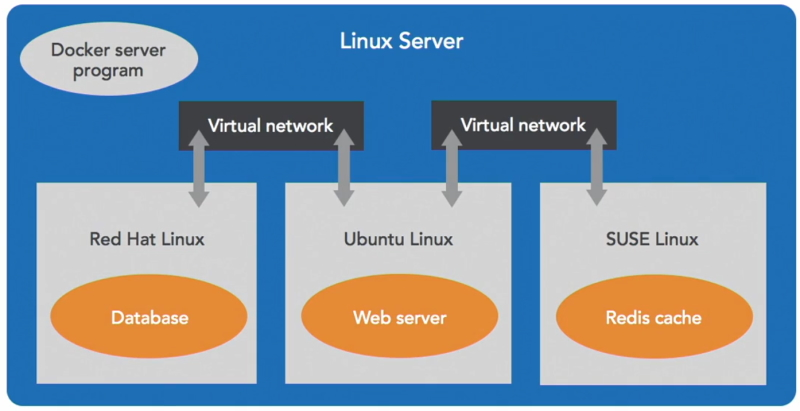
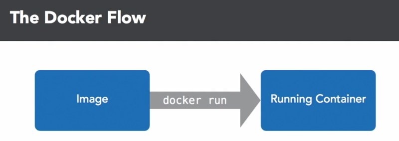
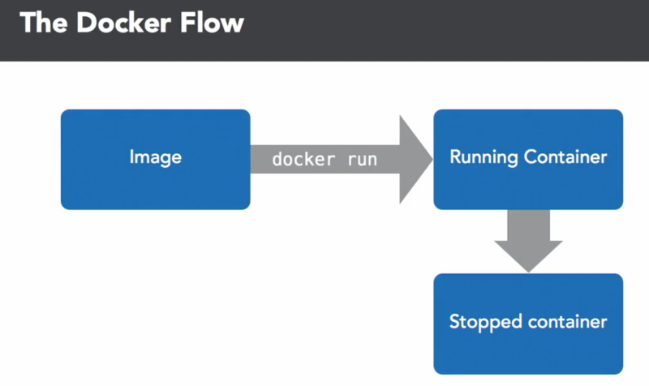
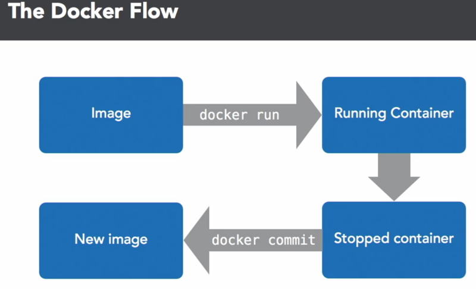

Docker carves up a Linux computer system into sealed containers that run your code. Each container is sealed from the world and runs by itself.
These containers are designed to be portable so that they can be shipped from one place to another. Docker does the work of getting these containers to and from your systems.
Docker also builds these containers for you and is a social platform designed to help you to find and share containers. Other people may have built containers that you can use to build on top of your won containers.
Docker isn't a virtual machine it is just an operating system that has been carved up into little pieces.
A container is a sealed unit of software. It has everything in it to run that piece of code including the operating system.
A container includes:
So Docker takes up all of the services to run a Linux server

The way Docker works is that it takes up all the services to run a Linux server including networking, storage, code, interprocess communication and it makes a copy of that in the Linux kernel for each container. Each container has its own little world that it can't see out of and other containers can't see in. You might have one container that runs a database in Red Hat Linux and another container that runs a web server in Ubuntu Linux and that web server might be talking to a Redis caching server container in Open Suse Ubuntu. It doesn't matter which Linux is running in each container and Docker is program that manages all of this.
Docker sets it up, monitors and tears it down when it is no longer needed.
Docker is a client program that you run in a terminal. It is also a server program that listens to messages from that command and manages a running Linux system.
Docker has a program that builds containers from code. It takes your code, along with its dependencies and bundles it up and seals it into a container and it is a service that distributes these containers across the internet and it makes it so you can find other peoples work and they can find your work. Docker is also a company that makes all of these containers.
Dockers primary job is to manage a Linux server and start and stop your containers as required.
Most of us don't work on laptops that run Linux all the time so many people use a virtual machine on their laptop to run the Linux server to run Docker on the server side. Docker helps run this virtual machine.
Docker has tools that make this nearly transparent.
To start with you have your computer and in your terminal it interacts with a program named Docker. This version of Docker is the client and that is connecting to a program named Docker that is a server controlling a Linux virtual machine. This virtual machine is being managed by Docker for Windows. Once you have it install you can click on the whale icon in your status bar. You usually don't have to interact with this program as it is fairly well automated.
Note: You should install Hyper-V and containers through Windows features before you install Docker Desktop.
Setup a Docker account. Once you have done this you can download Docker Desktop for Windows.
In the configuration option make sure you don't select - Use Windows containers instead of Linux containers. We will only want to use Linux containers.
Note: I have WSL for Linux on my PC so I didn't get this option. It is automatically using Linux containers.
Once installed pull up a terminal.
docker info
Returns:
Client:
Context: default
Debug Mode: false
Plugins:
buildx: Docker Buildx (Docker Inc., v0.7.1)
compose: Docker Compose (Docker Inc., v2.2.1)
scan: Docker Scan (Docker Inc., v0.14.0)Server:
Containers: 10
Running: 0
Paused: 0
Stopped: 10
Images: 28
Server Version: 20.10.11
Storage Driver: overlay2
Backing Filesystem: extfs
This prints out information about Docker client and server. If you see a similar message you know your system is up and running.
Let's run a Docker container.
docker run hello-world
This will run the hello-world container. If you don't have this container on your system Docker will download it from its repository. This won't take long because it is the smallest container you can run.
The Docker container will run and print out a massage and then tear itself down.
Hello from Docker!
It also prints out some other information that describes the process that has just completed.
The Docker flow is a fundamental concept. It all begins with an image. An image is every file that is just enough of the operating system to allow you to do what you need to do. Traditionally you would install a whole operating system to do what you need to do. With Docker you pair it way down so you have a little container with just enough of the operating system to do what you need to do and you can have lots of these containers on your computer.
Let's look at our Docker images.
docker images
Returns.
REPOSITORY TAG IMAGE ID CREATED SIZE
ubuntu latest d13c942271d6 12 days ago 72.8MB
busybox latest beae173ccac6 2 weeks ago 1.24MB
mysql 8.0 3218b38490ce 4 weeks ago 516MB
alanrob17/nginx-website latest ae6252556552 5 weeks ago 148MB
...
Note: The TAG is the version number of the image and IMAGE ID is the internal representation of the image in Docker.
Now that you have an image what do you do with it? You can run the Docker image and turn it into a running container with a process in it that is doing something. Let's look at running an image to make a container.
docker run -it ubuntu:latest bash
Where -it is run a terminal interface. We want to run the ubuntu:latest image and we want to run the bash shell in the container.
We end up with the bash shell running a root.
PS C:\Temp\docker> docker run -it ubuntu:latest bash
root@35801cbffbc1:/# ls
bin boot dev etc home lib lib32 lib64 libx32 media mnt ...
root@35801cbffbc1:/#
You see the bash prompt and you can run any linux command like ls. When we run this we can see that we have a full command line version of Ubuntu linux with a large directory structure.
cat /etc/lsb-release
Will show us the version of Ubuntu we are using.
root@35801cbffbc1:/home/my-folder# cat /etc/lsb-release
DISTRIB_ID=Ubuntu
DISTRIB_RELEASE=20.04
DISTRIB_CODENAME=focal
DISTRIB_DESCRIPTION="Ubuntu 20.04.3 LTS"
root@35801cbffbc1:/home/my-folder#
To exit your container type exit or press CTRL-D.
Run the Docker image again and this time pop open another terminal window at the same time.
In the new terminal window type.
docker ps
This will show you a list of containers that are running at the moment.
PS C:\Temp\docker> docker ps
CONTAINER ID IMAGE COMMAND CREATED STATUS PORTS NAMES
39e097b6bf4e ubuntu:latest "bash" 2 minutes ago Up 2 minutes nifty_lichterman
PS C:\Temp\docker>
This time you can see the container that is running and because you didn't specify a name Docker will create one for you.
Note: Now that you are running the container you are seeing the container id not the image id. These are two different Id's. You can also see the image that it came from, ubuntu:latest and see how long it has been running.
Note: If you are using a bash or Ubuntu terminal you can create a format string and add it to your .bashrc. This will allow you to see vertical output.
In ~/.bashrc add.
# vertical output for - docker ps --format=$FORMAT
export FORMAT="ID\t{{.ID}}\nNAME\t{{.Names}}\nIMAGE\t{{.Image}}\nPORTS\t{{.Ports}}\nCOMMAND\t{{.Command}}\nCREATED\t{{.CreatedAt}}\nSTATUS\t{{.Status}}\n"
Now run.
docker ps --format=$FORMAT
Returns.
alanr@TIGER:/mnt/c/Temp/docker$ docker ps --format=$FORMAT
ID 39e097b6bf4e
NAME nifty_lichterman
IMAGE ubuntu:latest
PORTS
COMMAND "bash"
CREATED 2022-01-19 17:27:00 +1100 AEDT
STATUS Up 23 minutes
This is an easier format to look at.
Now we have a running container. When we run a container we don't change the image. Any changes that we make will happen to the container and once you tear that container down you will lose the containers changes.
Now we are going to look at something that is different from running a virtual machine or a Linux server. Inside our container we can create a directory and a file.
root@35801cbffbc1:/# mkdir home/my-folder
root@35801cbffbc1:/# cd /home/my-folder/
root@35801cbffbc1:/home/my-folder# touch list.txt
root@35801cbffbc1:/home/my-folder# ls
list.txt
root@35801cbffbc1:/home/my-folder#
Note: If you spin up another container you won't see the directory or file you created in the previous container. This because the image doesn't contain that directory or file.
If you exit the original container and start it up again the directory and file will have disappeared. They aren't part of the original image.

When you have a running container you can put files in it but it is only temporary and lasts until the container shuts down.
What if you want to save those files?
The next step in the Docker flow is the stopped container. When the process exits the container is still there so the file we created is still in the container. I can go back and find that container, it didn't get deleted. It is just that it is still in a stopped container.
I can look at the most recently stopped container with the ps command to show my containers.
docker ps -a
-a is show all stopped containers.
Shows all the containers that have run. At the top is the container we just closed.
PS C:\Temp\docker> docker ps -a
CONTAINER ID IMAGE COMMAND CREATED STATUS PORTS NAMES
39e097b6bf4e ubuntu:latest "bash" 49 minutes ago Exited (0) 7 seconds ago nifty_lichterman
...
docker ps -l
Will just show you the last container.
alanr@TIGER:/mnt/c/Temp/docker$ docker ps -l --format=$FORMAT
ID 39e097b6bf4e
NAME nifty_lichterman
IMAGE ubuntu:latest
PORTS
COMMAND "bash"
CREATED 2022-01-19 17:27:00 +1100 AEDT
STATUS Exited (0) 2 hours ago

At the moment we have started from an image ran a container and installed our software on it and then stopped the container.
The next step is the Docker commit command. That takes containers and makes a new image out of them. It doesn't delete the container but now we have a new image with the same content that was in the container.

So Docker run and Docker commit are complimentary to each other.
Now we can make a new image.
docker commit 39e097b6bf4e
This returns the new image id.
docker commit 39e097b6bf4e
sha256:97f6058c77a32bcafcc53631fb73121bcf6aba6a7e16fbc4cf20a1f32f7cb33b
We have made a new image with a large sha value which isn't convenient. Let's check the images.
docker images
Returns.
REPOSITORY TAG IMAGE ID CREATED SIZE
<none> <none> 97f6058c77a3 2 minutes ago 72.8MB
ubuntu latest d13c942271d6 12 days ago 72.8MB
busybox latest beae173ccac6 2 weeks ago 1.24MB
mysql 8.0 3218b38490ce 4 weeks ago 516MB
...
Notice that the image that we created is at the top. The first 12 characters of the sha value identifies that this the image we created.
Also note that there is no Repository or Tag.
We can give this image a tag name.
docker tag 97f6058c77a32bcafcc53631fb73121bcf6aba6a7e16fbc4cf20a1f32f7cb33b my-ubuntu
Check the images again and you see.
REPOSITORY TAG IMAGE ID CREATED SIZE
my-ubuntu latest 97f6058c77a3 9 minutes ago 72.8MB
ubuntu latest d13c942271d6 12 days ago 72.8MB
...
The repository is now named my-ubuntu.
Run this image and see if your directory and file still exist.
PS C:\Temp\docker> docker run -it my-ubuntu
root@2718af6622db:/# ls
bin boot dev etc home lib lib32 lib64 libx32 media mnt ...
root@2718af6622db:/# cd home
root@2718af6622db:/home# ls
alan
root@2718af6622db:/home# cd alan
root@2718af6622db:/home/alan# ls
list.txt
You can do both of these steps in the one command with docker commit magical_blackwell my-newer-ubuntu.
PS C:\Temp\docker> docker ps -l
CONTAINER ID IMAGE COMMAND CREATED STATUS PORTS NAMES
2718af6622db my-ubuntu "bash" 5 minutes ago Exited (127) 3 minutes ago magical_blackwell
PS C:\Temp\docker> docker commit magical_blackwell my-newer-ubuntu
sha256:3c3dd820dc428075845a2ee816611ddb608a77473a686d36b39a232210b530d4
PS C:\Temp\docker> docker images
REPOSITORY TAG IMAGE ID CREATED SIZE
my-newer-ubuntu latest 3c3dd820dc42 13 seconds ago 72.8MB
myubuntu latest edd05ad27157 13 minutes ago 72.8MB
...
This is a simpler process. It is much easier than doing a commit and then doing a tag but just remember that underneath the hood that it is doing both commands.
We want to use an Nginx image to serve web pages. We need to run Nginx with an exposed port.
Nginx works on http or https and can be used as a load balancer spreading content across multiple web servers.
Note: I usually run Docker to download an image if it isn't on my PC. Another way to do this is.
docker pull nginx
Once we pull an image we are able to use it as a container.
The basic command is
docker run nginx
This leaves the container running but you don't see any output. This means that we are connected to the STDIN and STDOUT of the nginx process of the container.
Open another terminal and check that the container is running.
docker ps -l
Where -l show the last container opened.
CONTAINER ID IMAGE COMMAND CREATED STATUS PORTS NAMES
7310c22962df nginx "/docker-entrypoint.…" 14 seconds ago Up 13 seconds 80/tcp kind_mirzakhani
Note: that this container is running on Port 80. If you try to run port 80 in your browser you will get a 404 error. You are not able to connect to this web server.
If you want to connect to the web server you have to use port mapping.
Stop this container with a CTRL-C.
If, for some reason you want to kill a container you can do this with the container Id or the name of the container.
In the case above I could kill this with.
docker stop 7310c22962df
Note: you could have done docker stop 73 and the container would have stopped.
Or
docker stop kind_mirzakhani
In this case it would be better to use.
docker kill 7310c22962df
We do this because the sh process doesn't react to the SIGTERM that is sent by Docker to the Docker container after docker stop. In 10 seconds docker stop reverts to the docker kill process.
Do the following command to see if all containers have stopped.
docker ps
We need to open up an external port for the container so that we can run the web server.
docker run -p 8080:80 nginx
This opens us up in the container leaving a cursor running in the terminal.
Crack open a browser with localhost:8080.
We have launched this container with option -p. Nginx is running on port 80 inside the container. On windows with Docker Desktop IP addresses of the containers are "not reachable". -p 8080:80 means open up the port 8080 on my computer and forward it to port 80 inside the container. The external port 8080 is mapped to the internal port 80 inside your container. You can use any external port but the internal port must be 80.
If you look at the terminal you will see logs displayed through STDOUT from the container to the screen.
The web page shows the default page that is coming from the container. We can create our own content to run with the nginx container.
Once we stop the nginx container the port 8080 is no longer exposed to the browser.
To run our own content within the nginx container we have to create a new web project.
Navigate into the *home/alanr/Documents folder and create a new folder named website.
Create a new index.html file and add a favicon.ico file to the folder.
To show this content we will have to do port mapping and volume mapping.
docker run -p 8080:80 -v /home/alanr/Documents/website:/usr/share/nginx/html nginx
In this command we are exposing the external port -p 8080:80 and mapping a local volume to the default content folder in nginx.
-v /home/alanr/Documents/website:/usr/share/nginx/html means map the local content (/home/alanr/Documents/website) to the default content folder in nginx (/usr/share/nginx/html).
In the web browser.
Note: The favicon has been installed correctly. You can see it in the tab.
We have a hard coded local path in our volume. This can cause problems in containers so we are going to replace that with the current patch as a variable.
docker run -p 8080:80 -v $PWD:/usr/share/nginx/html nginx
$PWD is the current working folder where our website resides.
Note: We can use the PC's IP to server our web pages. On Windows use ipconfig to get your IP address. In my case, http://192.168.1.105:8080/.
Usually containers with long running processes like nginx, mongodb or redis are started and are running in the background.
If we run our hello-world image again it prints out a message and once its process has finished it shuts down the container.
When we run alpine.
docker run alpine
The process runs and once again when the process terminates it shuts down the container.
Check the history for the alpine image.
docker history alpine
Returns.
IMAGE CREATED CREATED BY SIZE COMMENT
c059bfaa849c 8 weeks ago /bin/sh -c #(nop) CMD ["/bin/sh"] 0B
<missing> 8 weeks ago /bin/sh -c #(nop) ADD file:9233f6f2237d79659… 5.59MB
This shows the command that has run. In one of those process's it ran the shell, /bin/sh. This process opened up a shell and waited for STDIN and STDOUT messages to run.
When we ran docker run alpine we didn't allow it to run with STDIN and STDOUT. We can do this with the flags -it.
docker run -ti alpine
In this case you will be presented with a cursor in the running process that is waiting for STDIN or STDOUT. If you do a docker ps in another terminal window the command will show you that you are running in a shell (/bin/sh)